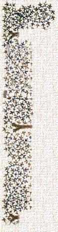
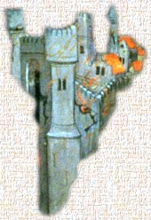

 |
 Our HouseOur manor house is made of stone, with a roof of slate. On the first floor is the Great Hall, where we may entertain our guests or hold feasts. But we take most of our meals in the adjoining solar. Just off the Great Hall is our chapel. In the back of the house is the kitchen with an especially large fireplace for roasting game and two fine ovens for baking our bread and meat pies. Outside the kitchen is the garden. We also have a spacious cellar for storage of grain, vegetables, dried meat, and other provisions that must be kept cool to prevent spoilage. There are rooms for guests and servants upstairs. We also have a stable for our two horses, and a barn for further storage of food for both man and beasts. |